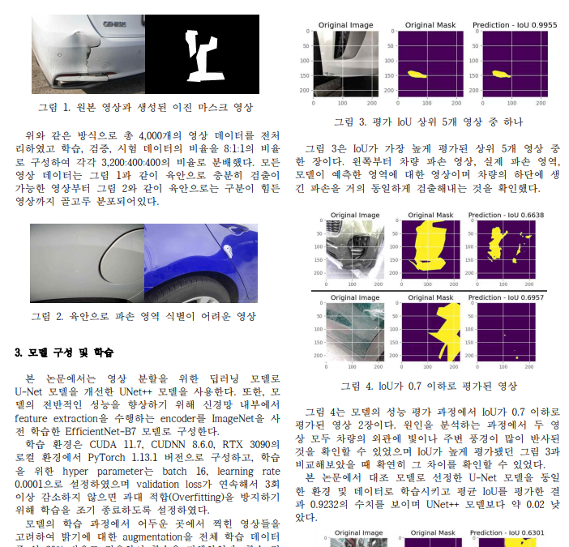
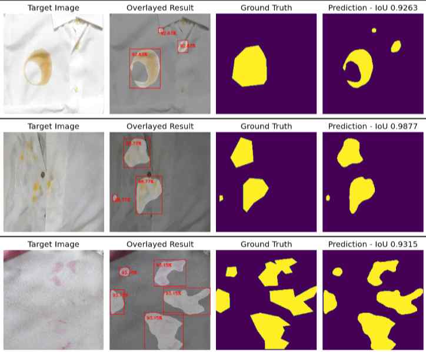
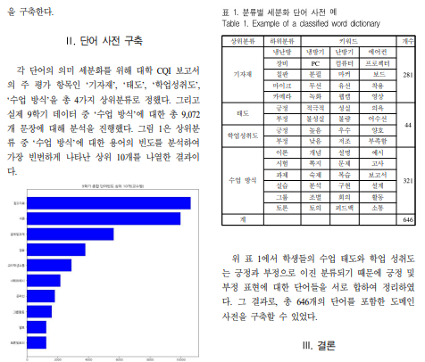

|
Junhyeok Seo I am first-year M.S. student in Department of Artificial Intelligence at Kyungpook National University, advised by Prof. Donggyu Lee. Prior to KNU, I received B.S. degrees in Department of Computer Engineering at Kumoh National Institute of Technology, advised by Prof. Hyeonju Yoon. I worked on diverse topics in computer vision, including Multimodal Learning and Imitation Learning. |
{kind=link}
News
|
Research |
|

|
Deep Learning-Based Vehicle Damage Area Detection System using Semantic Segmentation
Junhyeok Seo, Hyeonju Yoon KSC, 2023 - Domestic Conference This paper proposes a system for detecting vehicle damage areas through semantic segmentation using the UNet++ model, achieving pixel-level accuracy with an average IoU of 0.94 and comparing its performance with the conventional U-Net model under the same conditions. |
|

|
Segmentation of Stain Area in Clothing Images using UNet++
Junhyeok Seo, Gunwook Kim, Junsu Park, Sungyoung Kim KIIT, 2023Bronze Award - Winning a Bronze Award for Outstanding Paper - Domestic Conference This paper proposes a deep learning-based technique for detecting stains in clothing images using a UNet++ model with an EfficientNet encoder pre-trained on ImageNet, achieving an average IoU of approximately 0.9589 through semantic segmentation of 200 stained clothing images. |
|

|
Domain Dictionary Construction for Automatic Analysis of Subject CQI Reports
Gunwoo Kim, Junsu Park, Junhyeok Seo, Yuchul Jung, Hyeonju Yoon KIIT, 2022Silver Award - Winning a Silver Award for Outstanding Paper - Domestic Conference In this paper, various words used in the actual CQI report are analyzed with the frequency of appearance, and a domain dictionary according to the upper classification and the lower classification is constructed to lay the foundation for future CQI report automatic analysis research. |

|
Deep Learning-Based Vehicle Model and License Plate Identification System using Vehicle Image
Junhyeok Seo, Hyeonju Yoon KIIT, 2022Gold Award - Winning a Gold Award for Outstanding Paper - Domestic Conference I proposed a novel framework for a vehicle model recognition and license plate identification system using YOLOv5, enabling both tasks to be carried out simultaneously. Proposed image processing algorithm for estimating the region of license plate is much lighter than previous deep learning based method. |
Projects |
|

|
Training Excavator Virtual Driver based on Inverse RL
with HD Hyundai Heavy Industries Co., Ltd.
|

|
End-to-End Machine Learning Based Guidance Research
with Korean Agency for Defense Development (ADD) May. 2021 - Apr. 2023 |
Awards and Achievements |
- [Scholarship] Dashin Songchon Foundation (Aug 2024 - Present)
- [Awards] Graduated Summa Cum Laude, Seoul National University (1st prize in Department of Aerospace Engineering)
- [Scholarship] Hyundai Motor Chung Mong-Koo Foundation (Aug 2021 - Jul2023)
- [Awards] NeurIPS Scholar Award
- [Awards] Global Excellence Scholarship 2022, Hyundai Motor Chung Mong-Koo Foundation
- [Awards] Best poster competition, SNU Artificial Intelligence Institute Spring Retreat
- [Awards] Global Excellence Scholarship 2023, Hyundai Motor Chung Mong-Koo Foundation
Academic Services |
- Program Committee, RSS 2024 SemRob Workshop
- Conference reviewer for ICML'22 '24
- Conference reviewer for IROS'23
- Conference reviewer for NeurIPS'23
- Conference reviewer for ICLR'24 '25
- Conference reviewer for ICRA'24 '25
- Conference reviewer for AAAI'25
Professional Experience |
-
 [Internship] Toyota Research Institute, 2025.5 - 2025.8
[Internship] Toyota Research Institute, 2025.5 - 2025.8
-
 [Internship] Samsung Electronics, Deep Learning Algorithm Team / Device Solutions (DS), 2020.7 - 2020.9
[Internship] Samsung Electronics, Deep Learning Algorithm Team / Device Solutions (DS), 2020.7 - 2020.9
-
 [Research Group] Deepest. (SNU Deep Learning Society), 2020.9 - 2022.2
[Research Group] Deepest. (SNU Deep Learning Society), 2020.9 - 2022.2
|
Source code credit to Dr. Jon Barron |